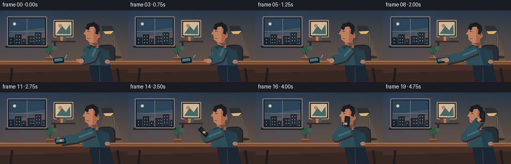
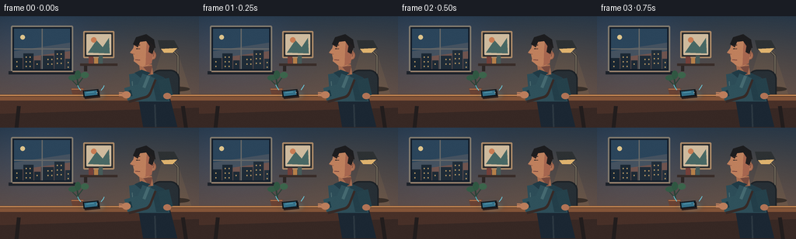

CODING AGENTS AS PIXEL WORLD MODELS
traex/GPT-5.6-Sol · motion_rationality_0049
点击播放 · 原生 RGB 像素
逐轮保存的候选
回放视频、检查图与代码变化。
每份候选均可单独播放。实际图片检查记录在下方工具轨迹中。
候选 01播放与检查图
点击播放 · 原生 RGB 像素


展开代码变化
--- 上一保存版本
+++ 本次保存版本
@@ -0,0 +1,332 @@
+from pathlib import Path
+import math
+import numpy as np
+from PIL import Image, ImageDraw, ImageFilter
+
+import artifact_io
+
+
+# PixelWorld text-to-video: "A person is picking up the phone."
+# Everything is rendered at 4x resolution and reduced with Lanczos filtering.
+W, H, N = 256, 144, 20
+S = 4
+
+
+def sc(v):
+ if isinstance(v, (tuple, list)):
+ return tuple(int(round(x * S)) for x in v)
+ return int(round(v * S))
+
+
+def smooth(x):
+ x = max(0.0, min(1.0, x))
+ return x * x * (3.0 - 2.0 * x)
+
+
+def mix(a, b, t):
+ return a + (b - a) * t
+
+
+def pmix(a, b, t):
+ return (mix(a[0], b[0], t), mix(a[1], b[1], t))
+
+
+def polygon(draw, pts, fill):
+ draw.polygon([sc(p) for p in pts], fill=fill)
+
+
+def ellipse(draw, box, fill, outline=None, width=1):
+ draw.ellipse(sc(box), fill=fill, outline=outline, width=sc(width))
+
+
+def rounded(draw, box, radius, fill, outline=None, width=1):
+ draw.rounded_rectangle(sc(box), radius=sc(radius), fill=fill,
+ outline=outline, width=sc(width))
+
+
+def line(draw, pts, fill, width, joint="curve"):
+ draw.line([sc(p) for p in pts], fill=fill, width=sc(width), joint=joint)
+
+
+def static_background():
+ """Warm, dimensional home-office background."""
+ yy, xx = np.mgrid[0:H*S, 0:W*S]
+ top = np.array([38, 54, 70], dtype=float)
+ bottom = np.array([112, 84, 72], dtype=float)
+ g = (yy / (H*S - 1))[..., None]
+ arr = top * (1-g) + bottom * g
+ # Window-side cool light and a warm pool behind the person.
+ cool = np.exp(-(((xx-50*S)/(72*S))**2 + ((yy-35*S)/(58*S))**2))[..., None]
+ warm = np.exp(-(((xx-191*S)/(91*S))**2 + ((yy-76*S)/(70*S))**2))[..., None]
+ arr += cool * np.array([5, 11, 19]) + warm * np.array([12, 7, 0])
+ img = Image.fromarray(np.uint8(np.clip(arr, 0, 255)), "RGB")
+ d = ImageDraw.Draw(img)
+
+ # Window and evening city, left third.
+ rounded(d, (14, 12, 94, 72), 2, (19, 29, 42), (130, 123, 111), 2)
+ polygon(d, [(18,16),(90,16),(90,68),(18,68)], (43, 69, 91))
+ # sunset gradient bands
+ polygon(d, [(18,45),(90,34),(90,68),(18,68)], (69, 82, 96))
+ polygon(d, [(18,55),(90,45),(90,68),(18,68)], (111, 84, 79))
+ ellipse(d, (26,24,32,30), (222, 196, 140))
+ # skyline silhouettes and lit windows
+ buildings = [(18,54,29,68),(30,48,43,68),(44,57,52,68),
+ (53,51,69,68),(70,44,83,68),(84,55,90,68)]
+ for j, b in enumerate(buildings):
+ d.rectangle(sc(b), fill=(25+j*2, 38+j*2, 50+j*2))
+ for wx in range(int(b[0]+3), int(b[2]-1), 5):
+ for wy in range(int(b[1]+4), int(b[3]-2), 6):
+ if (wx + wy + j) % 3:
+ d.rectangle(sc((wx,wy,wx+1.3,wy+1.6)), fill=(195,161,105))
+ line(d, [(54,16),(54,68)], (105,106,105), 1.5)
+ line(d, [(18,42),(90,42)], (105,106,105), 1.5)
+ # soft sill shadow
+ d.rectangle(sc((11,71,97,75)), fill=(30,35,43))
+ d.rectangle(sc((16,71,94,72)), fill=(163,134,110))
+
+ # Framed print and shelf on back wall.
+ rounded(d, (107,19,147,54), 1.5, (39,42,45), (173,139,105), 2)
+ rounded(d, (111,23,143,50), 1, (207,187,158))
+ polygon(d, [(113,47),(124,31),(132,40),(140,28),(141,48)], (72,104,100))
+ ellipse(d, (117,27,124,34), (201,124,83))
+ d.rectangle(sc((103,61,151,64)), fill=(57,45,41))
+ d.rectangle(sc((108,64,112,71)), fill=(45,39,38))
+ # books
+ d.rectangle(sc((114,52,120,61)), fill=(117,64,57))
+ d.rectangle(sc((121,54,126,61)), fill=(182,128,73))
+ d.rectangle(sc((127,51,132,61)), fill=(69,91,89))
+
+ # Desk lamp behind the arm.
+ ellipse(d, (213,91,244,97), (43,38,37))
+ line(d, [(229,92),(229,51),(216,38)], (48,49,51), 3)
+ line(d, [(229,92),(229,51),(216,38)], (128,119,106), 1)
+ polygon(d, [(203,31),(224,31),(230,42),(206,43)], (45,49,51))
+ polygon(d, [(207,42),(228,41),(222,47),(211,47)], (223,179,111))
+ # lamp glow, translucent
+ glow = Image.new("RGBA", img.size, (0,0,0,0))
+ gd = ImageDraw.Draw(glow)
+ gd.polygon([sc((208,45)),sc((228,45)),sc((246,101)),sc((191,101))],
+ fill=(255,188,94,16))
+ img = Image.alpha_composite(img.convert("RGBA"), glow).convert("RGB")
+ d = ImageDraw.Draw(img)
+
+ # Potted plant silhouette.
+ line(d, [(102,99),(99,78)], (44,68,57), 2)
+ line(d, [(101,91),(92,82)], (44,68,57), 1.5)
+ line(d, [(100,88),(109,76)], (44,68,57), 1.5)
+ ellipse(d, (88,76,99,83), (52,91,70))
+ ellipse(d, (104,72,114,80), (60,101,76))
+ ellipse(d, (96,70,104,81), (48,87,66))
+ polygon(d, [(91,93),(108,93),(105,104),(94,104)], (105,66,52))
+ line(d, [(92,94),(107,94)], (192,123,77), 1)
+
+ # Chair (behind person and desk).
+ rounded(d, (194,69,231,131), 12, (39,47,53), (29,34,39), 2)
+ line(d, [(203,123),(200,141)], (27,31,35), 4)
+ line(d, [(221,123),(226,141)], (27,31,35), 4)
+
+ # Desktop and apron, strong horizontal depth cue.
+ polygon(d, [(0,101),(256,101),(256,116),(0,116)], (91,59,43))
+ d.rectangle(sc((0,104,256,109)), fill=(131,84,56))
+ line(d, [(0,102),(256,102)], (205,142,87), 1.5)
+ polygon(d, [(0,109),(256,109),(256,144),(0,144)], (55,40,36))
+ # front panel illumination
+ polygon(d, [(0,109),(256,109),(256,118),(0,126)], (72,48,40))
+ line(d, [(24,116),(21,144)], (34,29,29), 5)
+ line(d, [(235,116),(239,144)], (34,29,29), 5)
+ return img
+
+
+def phone_geometry(cx, cy, angle, long=20, short=9):
+ ca, sa = math.cos(angle), math.sin(angle)
+ ux, uy = ca, sa
+ vx, vy = -sa, ca
+ def p(a, b): return (cx + ux*a + vx*b, cy + uy*a + vy*b)
+ return [p(-long/2,-short/2), p(long/2,-short/2),
+ p(long/2,short/2), p(-long/2,short/2)], (ux,uy), (vx,vy)
+
+
+def draw_phone(draw, cx, cy, angle, lit=True, held=False):
+ pts, u, v = phone_geometry(cx, cy, angle)
+ # offset drop shadow, especially readable while on table
+ shadow = [(x+1.4, y+2.0) for x,y in pts]
+ polygon(draw, shadow, (45,34,32))
+ polygon(draw, pts, (17,22,27))
+ # screen inset as a smaller oriented slab
+ inset, _, _ = phone_geometry(cx-u[0]*0.2-v[0]*0.15,
+ cy-u[1]*0.2-v[1]*0.15, angle, 16.4, 6.2)
+ polygon(draw, inset, (51,112,137) if lit else (27,38,43))
+ # cyan screen reflection and speaker/camera cue
+ a = (cx-u[0]*5.9-v[0]*1.3, cy-u[1]*5.9-v[1]*1.3)
+ b = (cx+u[0]*3.8-v[0]*1.3, cy+u[1]*3.8-v[1]*1.3)
+ line(draw, [a,b], (111,183,197) if lit else (52,71,74), 0.8)
+ dot = (cx+u[0]*7.8, cy+u[1]*7.8)
+ ellipse(draw, (dot[0]-0.65,dot[1]-0.65,dot[0]+0.65,dot[1]+0.65), (145,158,155))
+
+
+def body_pose(frame):
+ # Notice -> lean/reach -> grasp -> return while lifting.
+ reach = smooth((frame - 3) / 6.0)
+ ret = smooth((frame - 11) / 7.0)
+ lean = 4.0 * reach * (1.0-ret)
+ shoulder = (191-lean, 77+0.5*lean)
+ if frame <= 3:
+ elbow, wrist = (184, 95), (162, 101)
+ elif frame <= 9:
+ q = smooth((frame-3)/6)
+ elbow = pmix((184,95),(153,92),q)
+ wrist = pmix((162,101),(123,99),q)
+ elif frame <= 11:
+ q = smooth((frame-9)/2)
+ elbow = pmix((153,92),(153,92),q)
+ wrist = pmix((123,99),(122,97),q)
+ else:
+ q = smooth((frame-11)/7)
+ elbow = pmix((153,92),(164,89),q)
+ # gentle arcing lift, rather than an implausible straight teleport
+ wrist = ((1-q)*(1-q)*122 + 2*(1-q)*q*164 + q*q*193,
+ (1-q)*(1-q)*97 + 2*(1-q)*q*76 + q*q*55)
+ return shoulder, elbow, wrist, lean
+
+
+def draw_person(img, frame):
+ d = ImageDraw.Draw(img)
+ shoulder, elbow, wrist, lean = body_pose(frame)
+ # Legs / lower body behind the tabletop.
+ polygon(d, [(178,107),(219,107),(228,143),(184,143)], (27,39,51))
+ line(d, [(199,114),(200,143)], (45,57,66), 2)
+
+ # Torso: small forward lean makes reaching feel weight-bearing.
+ polygon(d, [(166-lean,75),(192-lean,70),(215,82),(218,110),(169-lean,110)], (45,77,88))
+ polygon(d, [(193-lean,71),(211,79),(216,109),(201,109)], (35,62,73))
+ line(d, [(170-lean,84),(171-lean,107)], (73,105,111), 1.2)
+ # collar and neck
+ polygon(d, [(179-lean*.55,63),(195-lean*.35,62),(197-lean*.25,75),(181-lean*.65,77)], (168,109,80))
+ polygon(d, [(184-lean*.5,65),(196-lean*.25,64),(193-lean*.35,76)], (120,75,63))
+ polygon(d, [(173-lean,73),(182-lean*.6,69),(193-lean*.3,73),(184-lean*.6,82)], (33,59,70))
+
+ # Head in profile, following the torso subtly. At the end it tilts into phone.
+ lift = smooth((frame-12)/7)
+ hx = 185 - lean*.42 + 1.0*lift
+ hy = 46 + lean*.08 + 0.7*lift
+ # ear (behind face) then face
+ ellipse(d, (hx+8,hy-1,hx+16,hy+10), (172,111,83), (105,70,62), 0.8)
+ ellipse(d, (hx-14,hy-19,hx+13,hy+19), (190,129,94))
+ # face-side shadow
+ polygon(d, [(hx+4,hy-15),(hx+13,hy-8),(hx+10,hy+15),(hx+1,hy+18)], (166,102,79))
+ # profile nose and chin silhouette
+ polygon(d, [(hx-12,hy-7),(hx-18,hy+1),(hx-12,hy+3),
+ (hx-13,hy+12),(hx-6,hy+17),(hx+2,hy+17),(hx+3,hy-8)], (191,128,93))
+ # hair cap and sideburn
+ polygon(d, [(hx-14,hy-10),(hx-10,hy-19),(hx+3,hy-23),(hx+13,hy-16),
+ (hx+15,hy-5),(hx+7,hy-8),(hx+3,hy-14),(hx-5,hy-13),(hx-8,hy-6)], (29,29,31))
+ polygon(d, [(hx+8,hy-12),(hx+14,hy-7),(hx+11,hy+3),(hx+6,hy)], (34,31,32))
+ # eye looks toward phone before and during pickup, then ahead.
+ eye_y = hy-4
+ line(d, [(hx-10,eye_y),(hx-5,eye_y-0.3)], (63,43,39), 1)
+ pupil_x = hx-8.8 if frame < 11 else hx-6.8
+ ellipse(d, (pupil_x-0.7,eye_y-0.8,pupil_x+0.6,eye_y+0.6), (25,29,30))
+ # eyebrow, nose edge, mouth
+ line(d, [(hx-11,hy-8),(hx-5,hy-9)], (55,39,37), 1.2)
+ line(d, [(hx-17,hy+2),(hx-12,hy+3)], (134,80,67), 0.8)
+ line(d, [(hx-11,hy+10),(hx-5,hy+10.5)], (100,52,51), 1)
+ # ear detail remains visible until the handset covers it.
+ line(d, [(hx+10,hy+2),(hx+13,hy+1),(hx+12,hy+6)], (113,68,60), 0.8)
+
+ # Far arm rests near body; reinforces that the moving limb is the active hand.
+ line(d, [(210,81),(215,103)], (37,65,75), 15)
+ ellipse(d, (210,99,220,107), (178,116,86))
+
+ # Active arm: soft desk shadow followed by sleeve and exposed hand.
+ line(d, [(shoulder[0]+1.5,shoulder[1]+2),(elbow[0]+1.5,elbow[1]+2),
+ (wrist[0]+1.5,wrist[1]+2)], (54,42,39), 19)
+ line(d, [shoulder,elbow,wrist], (47,81,91), 17)
+ line(d, [shoulder,(mix(shoulder[0],elbow[0],.85),mix(shoulder[1],elbow[1],.85))],
+ (70,106,113), 4)
+ # cuff oriented approximately along forearm
+ vx, vy = wrist[0]-elbow[0], wrist[1]-elbow[1]
+ vl = max(1, math.hypot(vx,vy)); ux,uy=vx/vl,vy/vl
+ cuff = (wrist[0]-ux*6,wrist[1]-uy*6)
+ line(d, [(cuff[0]-uy*4,cuff[1]+ux*4),(cuff[0]+uy*4,cuff[1]-ux*4)], (27,55,66), 3)
+
+ skin=(188,126,92)
+ ellipse(d, (wrist[0]-5,wrist[1]-4,wrist[0]+6,wrist[1]+5), skin)
+
+ # Hand/finger details change from open reach to a secure grasp.
+ if frame <= 8:
+ # open fingers pointing toward the device
+ for k in range(3):
+ yoff=(k-1)*2.0
+ line(d, [(wrist[0]-2,wrist[1]+yoff),(wrist[0]-9,wrist[1]+yoff-0.4)], skin, 1.8)
+ else:
+ # fingers curled around the handset location
+ line(d, [(wrist[0]-2,wrist[1]-3),(wrist[0]-6,wrist[1]-6)], (209,145,106), 2)
+ line(d, [(wrist[0]+1,wrist[1]+3),(wrist[0]-4,wrist[1]+5)], (139,84,70), 1.4)
+
+ return (hx,hy), (shoulder,elbow,wrist)
+
+
+def render_frame(frame, base):
+ img = base.copy()
+ # Phone on desktop before grasp. It emits alternating ring marks.
+ d = ImageDraw.Draw(img)
+ if frame <= 10:
+ # soft screen glow on wood
+ glow = Image.new("RGBA", img.size, (0,0,0,0))
+ gd = ImageDraw.Draw(glow)
+ gd.ellipse(sc((103,93,137,110)), fill=(64,177,207,34))
+ glow = glow.filter(ImageFilter.GaussianBlur(sc(3)))
+ img = Image.alpha_composite(img.convert("RGBA"),glow).convert("RGB")
+ d = ImageDraw.Draw(img)
+ draw_phone(d, 117, 99.5, -0.11, True)
+ # clearly readable vibration/ring arcs; pulse cadence changes each frame.
+ if frame <= 8:
+ pulse = 1 + (frame % 2) * 1.3
+ for side in (-1,1):
+ x = 117 + side*(12+pulse)
+ line(d, [(x,96-pulse*.3),(x+side*3,93-pulse),(x+side*4,90-pulse*.7)],
+ (105,197,214), 1.1)
+ # Person and moving arm are rendered after the desktop phone so that fingers
+ # visibly arrive over it at contact.
+ head, pose = draw_person(img, frame)
+ d = ImageDraw.Draw(img)
+
+ if frame >= 10:
+ # handset follows a smooth quadratic path from table to ear.
+ if frame == 10:
+ q=0.0
+ elif frame == 11:
+ q=0.04
+ else:
+ q=smooth((frame-11)/7)
+ cx = (1-q)*(1-q)*117 + 2*(1-q)*q*162 + q*q*(head[0]+12)
+ cy = (1-q)*(1-q)*99 + 2*(1-q)*q*73 + q*q*(head[1]+1)
+ ang = mix(-0.11, math.pi/2+0.06, smooth(min(1,q*1.3)))
+ # at first contact the phone is still almost flat; screen turns dark once answered
+ draw_phone(d, cx, cy, ang, lit=(frame <= 11), held=True)
+ # foreground thumb over the phone provides an unambiguous grip.
+ _,_,wrist=pose
+ if frame >= 11:
+ ellipse(d, (wrist[0]-3,wrist[1]-3,wrist[0]+3,wrist[1]+2), (204,140,101))
+
+ # Stable, subtle film grain avoids flat computer-vector surfaces.
+ arr=np.asarray(img, dtype=np.int16)
+ rng=np.random.default_rng(2026) # stable grain prevents false motion
+ grain=rng.normal(0,0.8,arr.shape[:2])[:,:,None]
+ arr=np.uint8(np.clip(arr+grain,0,255))
+ img=Image.fromarray(arr,"RGB")
+ img=img.resize((W,H),Image.Resampling.LANCZOS)
+ return np.asarray(img,dtype=np.uint8)
+
+
+def main():
+ case_dir=Path(__file__).resolve().parent
+ base=static_background()
+ frames=np.stack([render_frame(i,base) for i in range(N)],axis=0)
+ assert frames.shape==(20,144,256,3) and frames.dtype==np.uint8
+ artifact_io.save(frames,case_dir)
+ print("Saved",frames.shape,"RGB frames to",case_dir)
+
+
+if __name__ == "__main__":
+ main()
可观测工具轨迹
实际执行的命令与返回图片。
命令 1exit 0
/bin/bash -lc "cat prompt.txt && printf '\\n--- GENERATION_RULES.md ---\\n' && cat GENERATION_RULES.md && printf '\\n--- task_spec.json ---\\n' && cat task_spec.json"
命令 2exit 0
/bin/bash -lc "find . -maxdepth 3 -type f -printf '%p\\n' | sort && printf '\\n--- tools ---\\n' && command -v ffmpeg || true && command -v python3 || true && python3 - <<'PY' mods=['PIL','numpy','cv2','imageio','moviepy','cairo'] for m in mods: try: x=__import__(m); print(m, 'OK', getattr(x,'__version__','')) except Exception as e: print(m, 'NO', type(e).__name__) PY"
命令 3exit 0
/bin/bash -lc 'cat artifact_io.py'
命令 4exit 0
/bin/bash -lc 'python3 generate.py && ls -lh pixels.npz inspection.png transition_check.png index.html frames/00.png frames/19.png'
命令 5exit 0
/bin/bash -lc "python3 - <<'PY'
from pathlib import Path
import numpy as np
from PIL import Image
p=Path('.')
fs=sorted((p/'frames').glob('*.png'))
assert len(fs)==20
x=np.stack([np.asarray(Image.open(f).convert('RGB')) for f in fs])
assert x.shape==(20,144,256,3) and x.dtype==np.uint8
z=np.load('pixels.npz')['pixels']
assert z.shape==(144,256,20)
packed=((x[...,0].astype(np.uint32)<<16)|(x[...,1].astype(np.uint32)<<8)|x[...,2])
assert np.array_equal(z,packed.transpose(1,2,0))
# Report temporal change. The fixed-grain fixed-background renderer should keep most pixels stable.
d=np.abs(np.diff(x.astype(int),axis=0))
changed=(d.max(axis=3)>5)
print('validated',x.shape,x.dtype,'npz',z.shape)
print('changed pixels / transition:',changed.sum(axis=(1,2)).tolist())
print('mean absolute RGB delta:',np.round(d.mean(axis=(1,2,3)),3).tolist())
print('frame files:',len(fs),'all RGB:',all(Image.open(f).mode=='RGB' for f in fs))
PY"保存候选 1 份；完成命令 5 次；可验证图片返回 0 张。原始 API 响应与完整日志保留在本地。